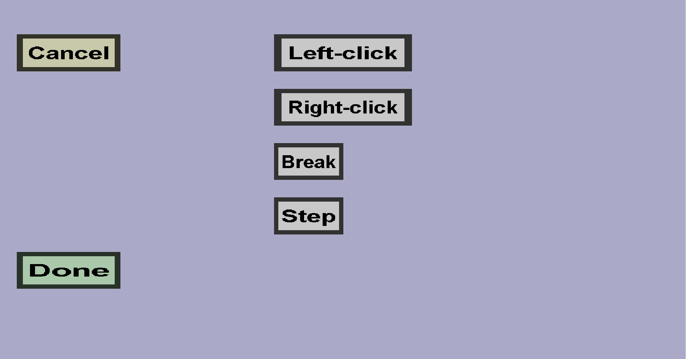

The block sounds menu can be used to configure the sounds of a custom block. It should look like this:
Note: the vanilla mushroom block sounds will also be played, regardless of what you configure here.
Each sound is optional. You can choose a sound by clicking on the corresponding button and you can remove a sound (after you have selected one) by clicking on the red cross on the left of the corresponding button.